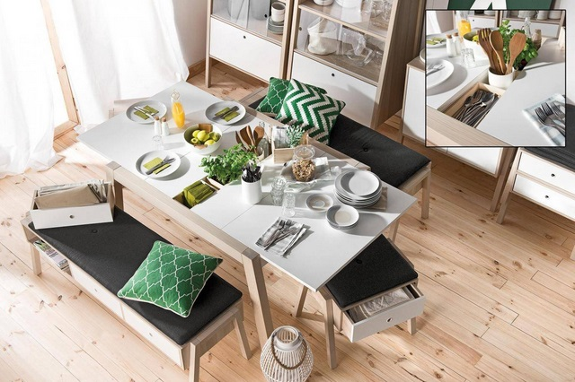

Bow storage coffee table
Baki geser di atas meja kopi atau coffee table serbaguna ini dapat digeser keluar masuk sesuai kebutuhan. Sebuah laci yang tersembunyi di bawah meja dapat memberi lebih banyak ruang untuk barang-barang, memperlihatkan suasana ruang yang tampak lebih rapi dan terorganisir dengan baik.
lihat

Spot extending dining table
Meja makan fleksibel yang bisa digunakan untuk 6 orang, dan bahkan memiliki pilihan untuk menciptakan ruang di dalam dan di tengah meja, sebagai tempat penyimpanan bumbu dan atau alat-alat makan.
lihatLori Concertina Bookcase
Model rak buku minimalis yang dapat disesuaikan dengan ukuran ruang. Rak yang juga bisa memutar dan mengubahnya untuk menciptakan unit sudut.
lihat